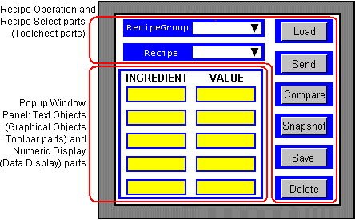
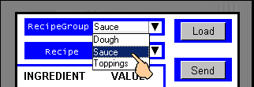
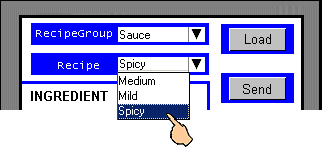
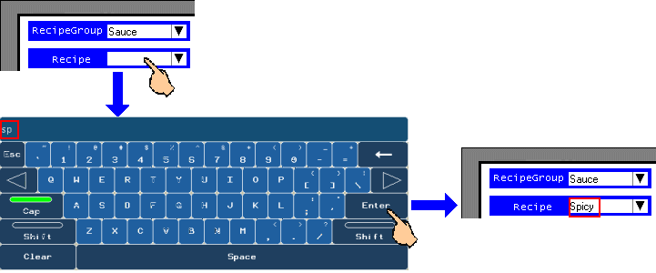
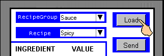
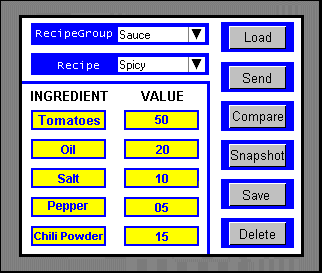
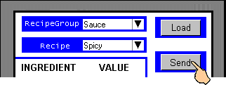

|
|
|
|
|
|
|
|
Before working with recipes at Runtime, you must first set up the recipe group and recipe data. All recipe groups are assigned and use the same recipe control variables to run recipe operations such as Recipe Select, Load, and Send. For more information, see Section 17.3, Setting Up a Recipe Group in the Editor.
This section describes how the recipe group and recipe have been set up for use during Runtime.
You can use recipe parts from the Toolchest to perform the Recipe Select function and other recipe operations such as Load and Send. When you select a Recipe Group and then a Recipe, you are specifying a combination of recipe control variables and ingredient variables that will work together when you perform a recipe operation.
The following is a graphical representation of a panel that is set up with a combination of Recipe Toolchest parts—to select recipes and perform recipe operations—and a Popup Window Panel that displays Text Objects for listing the ingredients, and as Ingredient and Value labels; and Numeric Display parts to display the ingredients' variable values.

Each Recipe Group has an associated Popup Window Panel with the list of ingredients and values for the Recipe Group. Using a conditional panel script (Trigger = Conditional, TriggerVariable = RecipeGroupNumber, and TriggerCondition = On Data Change), change the popup window to display the associated popup panel whenever the RecipeGroupNumber control variable changes.
In the following examples, the available recipe groups are Dough, Sauce, and Toppings. When the Sauce recipe group is selected, the Spicy, Medium, and Mild sauce recipes become available. All three Sauce recipes contain the same Ingredient variables—tomatoes, olive oil, salt, pepper, and chili powder—but the value for each variable differs from recipe to recipe. For example, the Spicy sauce and the Mild sauce use different amounts of chili powder. Therefore, the value of the chili powder ingredient variable in the Spicy Sauce and Mild Sauce recipes are different.
This section describes how, by first selecting a recipe group (Sauce), and then a recipe (Spicy), you can perform the following operations:
Load and view the recipe data on the target machine.
Send the recipe data to the equipment.

The Send operation is, in effect, a Load-and-Send operation. If the values of the selected Recipe Group and Recipe are not loaded, the Send operation first loads then sends the values. If the values are already loaded, then it simply sends.
When you select a recipe to load with data for viewing on the target machine, you must select a combination of ingredient variables and recipe control variables that work together to perform the Load operation on the desired recipe.
Select a Recipe Group that contains the type of recipe you want to work with.

This will update the value in the RecipeGroupNumber control variable. By using a action script that runs when this variable changes, you can update the popup window to display the popup window that lists the recipe ingredient variables.
For information about scripts, see Section 18.1, Programming with Scripts.
Select a recipe to load with recipe data.
If you had set the SortByRecipeName property to True in the editor, the Recipe names in the Recipe list box display in alphabetical order.

If you click the text area, a string keypad displays where you can enter one or more characters and press Enter to jump to the recipe.

Load the recipe data. In other words, fill the Ingredient variables and Recipe Control variables with the Recipe variable values.

View the recipe data on the target machine, to verify for correctness.

For more information, see Section 17.3.5.2, Using Recipe Controls to Automate Your Processes.
You can now make changes to or perform these operations on the recipe data:
Send Operation—see Section 17.6.2.2, Send Recipe Data to the Controller.
Edit Recipe Data—see Section 17.6.3, Changing Recipe Data on the Target Machine.
Snapshot Operation—see Section 17.6.4, Getting Recipe Data Modified on the Controller.
Compare Operation—see Section 17.6.5, Comparing Recipe Data.
Save and Delete Operations—see Section 17.6.7, Saving and Deleting Recipe Data.

To view recipes in Web Gate, the Load operation downloads the recipe data from the target server to the Web Gate client. For more information on using recipes with Web Gate, see Section 17.6.8, Sharing Recipes Using Web Gate.
|
Server Target |
Load recipe |
Web Gate Client |
|
|
Selecting a recipe and then performing the Send operation automatically loads and then sends your recipe to the equipment.
Select a Recipe Group.
Select the recipe that contains the data you want to send to the equipment.
Send (write) the recipe variables' current values to one or more equipment—as defined by the Ingredient variables used in the recipe.


When input from the PLC after a Snapshot operation exceeds the Min/Max range set for the recipe ingredient, the recipe still sends despite the Min/Max value being out of range. To control the input from the PLC after a Snapshot, use the variable Min/Max setting.
When a user edits the ingredient data and a value is outside the range defined in the variable properties, the value will not be sent to the equipment.
When a recipe group object uses variables that are also assigned to other non-recipe objects, the values of these variables may change outside the control of the recipe group. Therefore, assign each recipe ingredient with only one variable that is associated with only one object. In other words, for each variable used in a recipe, associate it with only one object and assign it to only one ingredient.
An error will display during the Send operation:
If the recipe group number specified for this operation is not valid.
If the recipe number is not valid.
If no recipe is currently active in the recipe group object.